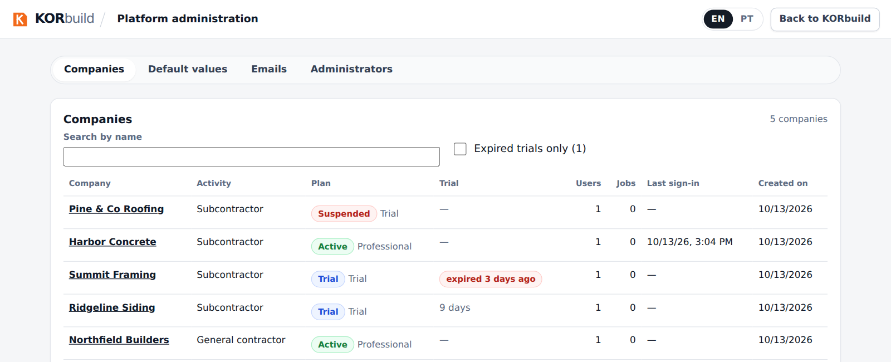
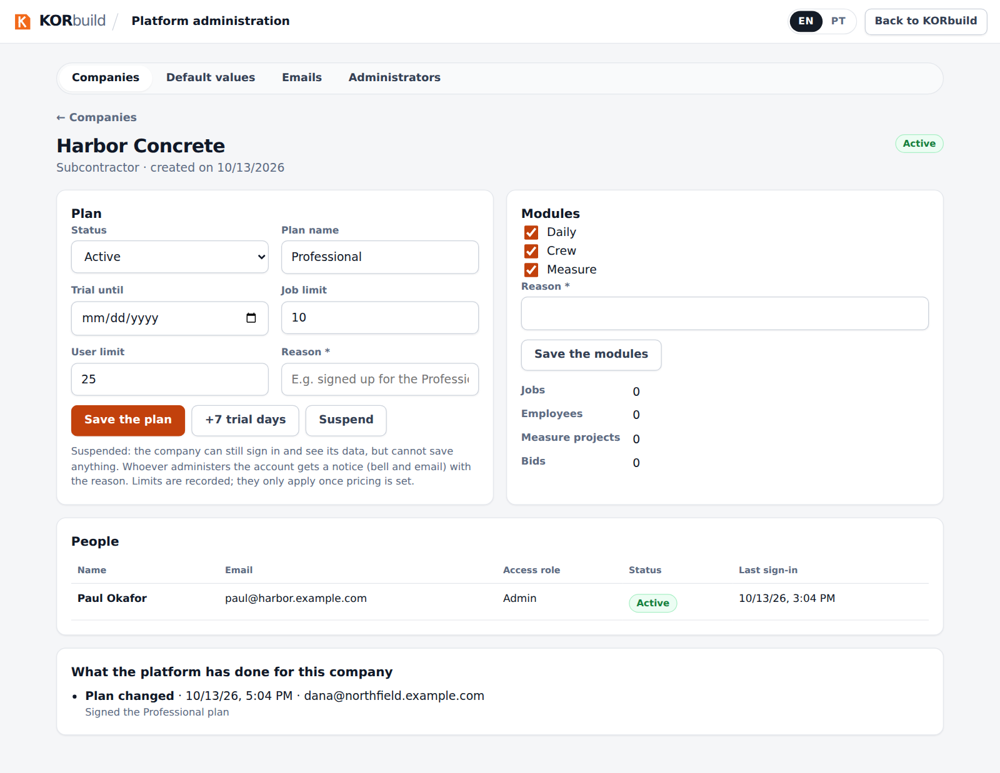
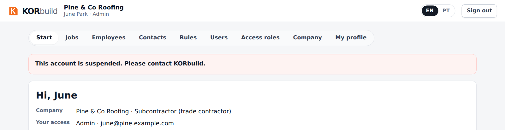
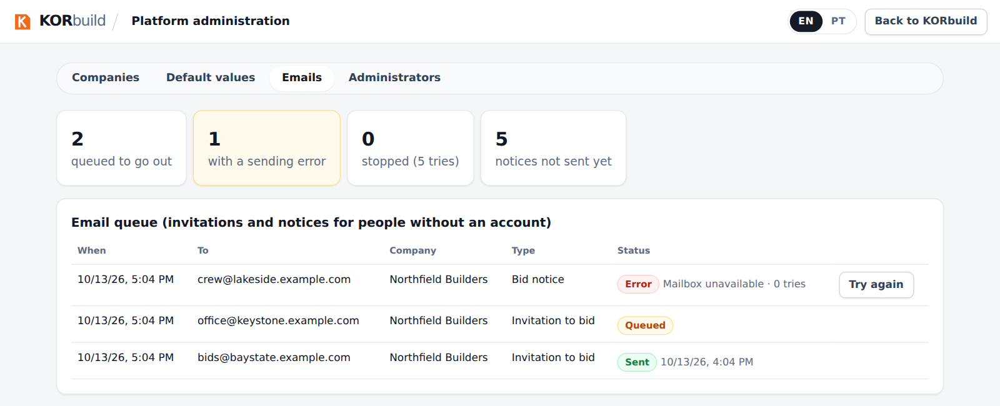

This page is for the KORbuild team, not for customers. It describes the control panel the team uses to look after the companies that have an account: see who is using what, change plans, suspend an account and watch the email queue. The panel is at admin.html and uses the same sign-in as the app; it only opens for people registered as platform administrators. Anyone else sees "No access".
Companies
The first screen lists every company with its status, plan, how many trial days are left, users, jobs and last sign-in. Search by name, or show only the expired trials.

One company
Open a company to see and change its plan and modules, see its people and read what the platform has already done for it.

- Status: Trial, Active, Overdue, Canceled or Suspended.
- Plan name, trial end, job limit and user limit. The limits are recorded; they only start to apply when pricing is set.
- +7 trial days extends the trial in one tap.
- Modules: Daily, Crew and Measure can be switched on or off per company (a general contractor only uses Daily).
- Every change needs a reason. It goes to the platform record and to the company's own audit trail, and whoever manages the company's account gets a notice (bell and email) with the reason.
Suspending a company
A suspended company can still sign in and see all its data, but cannot save anything: the database refuses every write. The app shows a notice at the top of the account until the platform reactivates it.

Emails
The queue shows invitations and notices for people without an account: what is waiting, what was sent and what failed. A message that failed or stopped after 5 tries has Try again.

Default values and administrators
- Default values: the number of trial days and the initial configuration given to new companies. Companies that already exist do not change.
- Administrators: who can open this panel. The platform always keeps at least one administrator.
Business rules
| ID | Rule | Status |
|---|---|---|
| PLT-001 | Only people registered as platform administrators open the panel; every action is checked in the database, not only on the screen. | Working |
| PLT-002 | A company's data is never opened to the platform by a table permission: the panel uses database functions that answer only to administrators. | Working |
| PLT-003 | Changing a plan or the modules needs a reason, and is recorded in the platform record and in the company's audit trail. | Working |
| PLT-004 | A suspended company can sign in and read, but every save is refused. | Working |
| PLT-005 | The people who manage the company's account are notified of a plan change, with the reason. | Working |
| PLT-006 | The job and user limits are recorded but not enforced until pricing is set. | Planned |
| PLT-007 | The platform record can only grow: entries are never edited or deleted. | Working |
| PLT-008 | The last platform administrator cannot be removed. | Working |